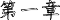
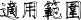
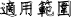
適用範圍
本安全構造手冊，適用於結構型溫室，簡易型溫室等園藝設施，主體結構的構造設計，施工及維修保養等工序之參考應用，天窗或捲揚等配備不包含在本手冊範圍內。
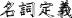
名詞定義
結構型溫室:以鋼構(參照第二章材料)樑、柱，及鋼、鋁材或錏管等構件屋面作為骨架，橫樑及側樑以型材結構加強，屋面可為山型、圓形或單斜背等幾何形狀，具有固定基礎的設施。(農糧署推動設施型農業計劃補助項目名稱為結構型鋼骨溫網室)
簡易型溫室:利用錏管加工成組合型骨架，支柱下端直接插入地面下，可不具固定基礎的設施。(農糧署推動設施型農業計劃補助項目名稱為簡易式塑膠布溫網室)
單棟：單一屋面構成的設施。
連棟：二個以上連續屋面構成的設施。
標準使用年限：設施的構造耐用上，可能使用的標準年數。

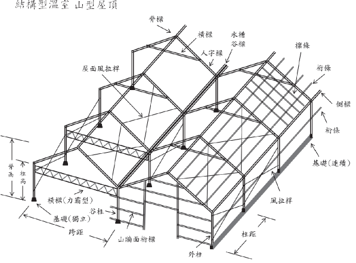
(1)
(
)
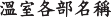
1-1 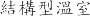 ( 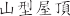 ) 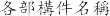
(2) 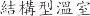( )
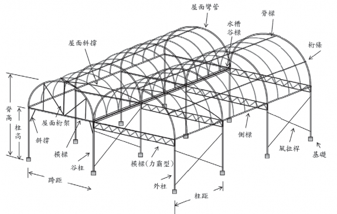
1-2 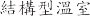 ( ) 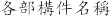
I
(3) 簡易型溫室
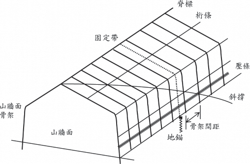
圖 1-3
簡易型溫室各部構件名稱
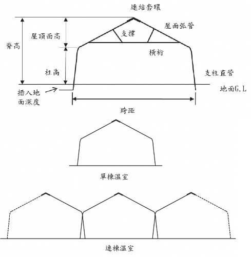
圖 1-4
簡易型溫室骨架各部名稱
標準使用年限
表 1-1
標準使用年限
温室種類 | 標準使用年限(年) |
結構型溫室(山型屋項) | 20 |
結構型溫室(圓屋項) | 15 |
簡易型溫室 | 8 |
注上:
表所列為溫室結構主體的使用年限，不含玻璃或塑膠布等外部被霞材
料。
10